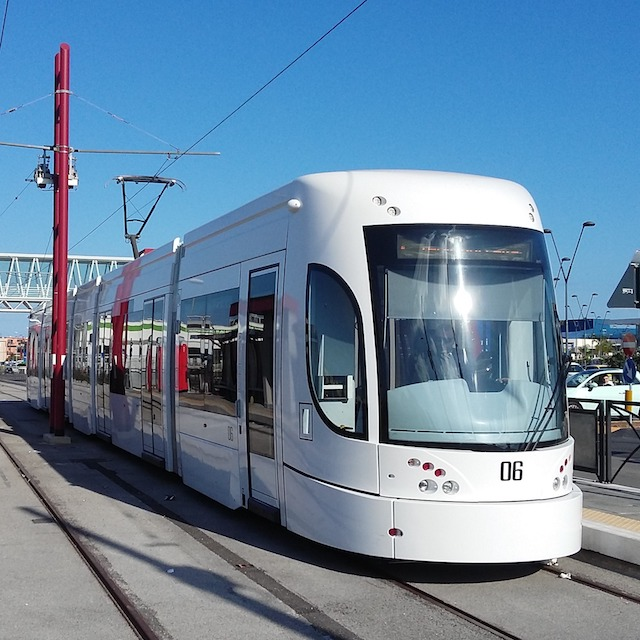
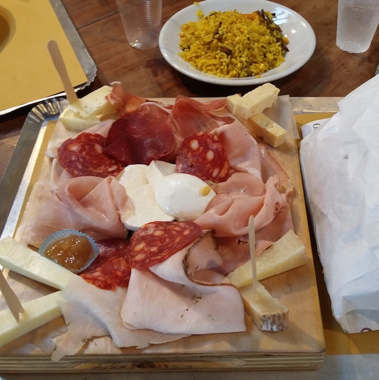
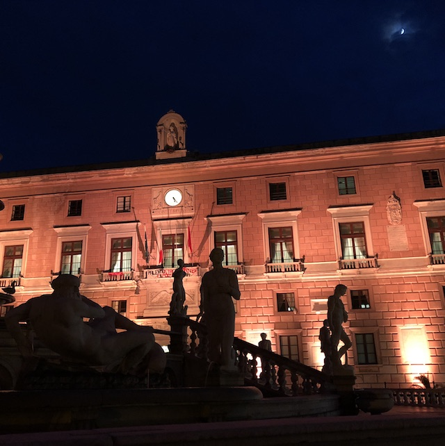

@Marcofromsicily
Home
City center
Mondello beach
General info
General info
Transports, events, food and cool stuff

Transports
Palermo Airport
is 30 km from the city center, buses
run every 30 minutes
on each direction.
Urban transports options are available on the
Moovit App
.
Events
Palermo is the
2018 Italian Capital of Culture
.
Palermo will guest the
European Nomadic Biennial "Manifesta"
in 2018.

Food
Antica Ficacceria San Francesco
is a traditional Sicilian food restaurant.
Fud
is a modern Sicilian food restaurant.
San Lorenzo Mercato
is an urban market with many Sicilian food restautants.

Cool stuff
Should you wish to read more about Palermo, there are
tips for digital nomads
.